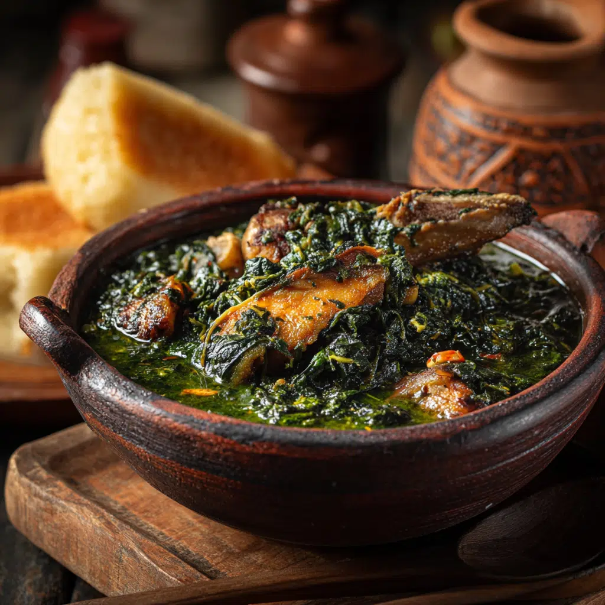

Discover the real authentic taste of Nigerian Soups with Soupy Chef!
Savor the rich flavors of authentic Nigerian Soups made with love and tradition. From Egusi to Pepper Soup, every bowl is crafted with fresh ingredients for a taste that feels like home. Experience comfort, culture, and nourishment with every spoonful. Order now and bring the heart of Nigeria to your table!
Why Choose Us?
The Delicious Story
Every bowl of soup tells a story. In Nigeria, soup is more than just food; it is a tradition, family, and celebration. From the simmering aroma of Egusi filled with ground melon seeds and tender meats, to the spicy notes of Pepper Soup that warms the soul, each recipe carries generations of love and care.
At Soupy Chef, we bring these timeless flavors to your table, cooked the way they were meant to be: with fresh ingredients, authentic spices, and a passion for taste. Each spoonful is not just nourishment, but a journey back to the heart of Nigerian kitchens, where laughter, stories, and togetherness are shared.